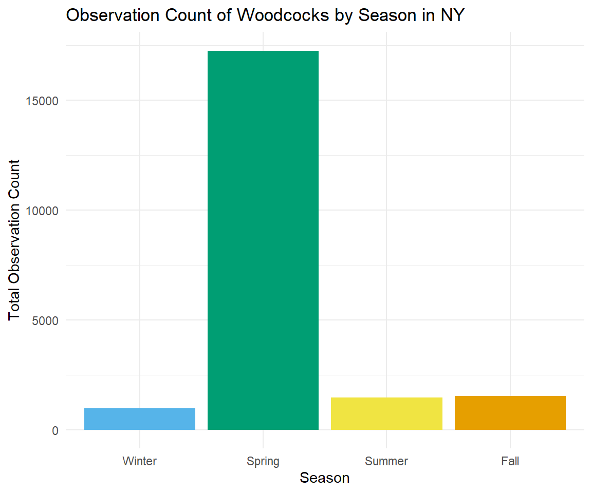
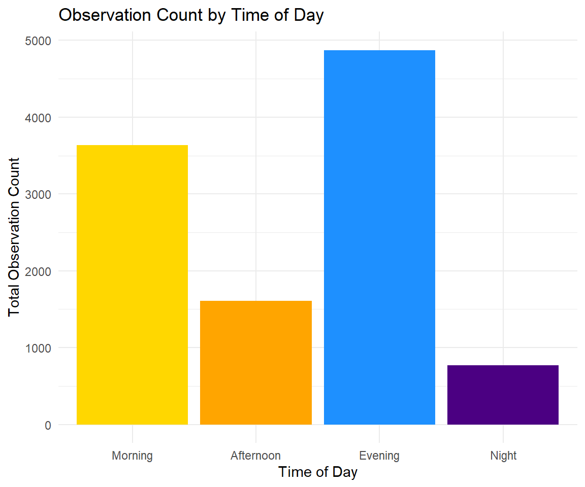
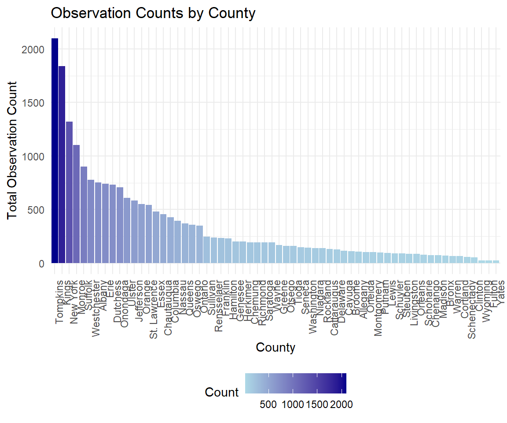

Does the season affect the activity of woodcocks?
observations_selected <- observations_selected |>
mutate(season = factor(season, levels = c("Winter", "Spring", "Summer", "Fall")))
season_summary <- observations_selected |>
group_by(season) |>
summarise(total_observation_count = sum(observation_count, na.rm = TRUE))
ggplot(season_summary, aes(x = season, y = total_observation_count, fill = season)) +
geom_bar(stat = "identity") +
scale_fill_manual(values = c("Winter" = "#56B4E9",
"Spring" = "#009E73",
"Summer" = "#F0E442",
"Fall" = "#E69F00")) +
labs(
title = "Observation Count of Woodcocks by Season in NY",
x = "Season",
y = "Total Observation Count"
) +
theme_minimal() +
theme(legend.position = "none")
The total observation count in Spring in NY is significantly higher than in any other season…
When do American woodcocks usually appear?
observations_selected <- observations_selected |>
mutate(time_of_day = factor(time_of_day, levels = c("Morning", "Afternoon", "Evening", "Night")))
# Summarize observation counts by time of day
time_summary <- observations_selected |>
group_by(time_of_day) |>
summarise(total_observation_count = n())
# Create the plot
ggplot(time_summary, aes(x = time_of_day, y = total_observation_count, fill = time_of_day)) +
geom_bar(stat = "identity") +
scale_fill_manual(values = c(
"Morning" = "#FFD700",
"Afternoon" = "#FFA500",
"Evening" = "#1E90FF",
"Night" = "#4B0082"
)) +
labs(
title = "Observation Count by Time of Day",
x = "Time of Day",
y = "Total Observation Count"
) +
theme_minimal() +
theme(legend.position = "none")
Are the difference significant?
kruskal_test <- kruskal.test(observation_count ~ time_of_day, data = observations_selected)
# Extract test results
kruskal_result <- data.frame(
Statistic = round(kruskal_test$statistic, 3),
Degrees_of_Freedom = kruskal_test$parameter,
P_Value = format.pval(kruskal_test$p.value, digits = 3, scientific = TRUE)
)
# Save results as a nice table
kruskal_result |>
kbl(caption = "Kruskal-Wallis Test Results") |>
kable_classic(full_width = FALSE, html_font = "Times")| Statistic | Degrees_of_Freedom | P_Value | |
|---|---|---|---|
| Kruskal-Wallis chi-squared | 1298.153 | 3 | <2e-16 |
There is strong evidence that the observation counts differ significantly across the time periods (Morning, Afternoon, Evening, Night).
Observation Counts by County
# Summarize the data by county
county_summary <- observations_selected |>
filter(!is.na(county)) |>
group_by(county) |>
summarise(total_observation_count = sum(observation_count, na.rm = TRUE))
# Create a bar plot
ggplot(county_summary, aes(x = reorder(county, -total_observation_count), y = total_observation_count, fill = total_observation_count)) +
geom_bar(stat = "identity") +
scale_fill_gradient(low = "lightblue", high = "darkblue", name = "Count") +
labs(
title = "Observation Counts by County",
x = "County",
y = "Total Observation Count"
) +
theme_minimal() +
theme(axis.text.x = element_text(angle = 90, hjust = 1),
legend.position = "bottom")